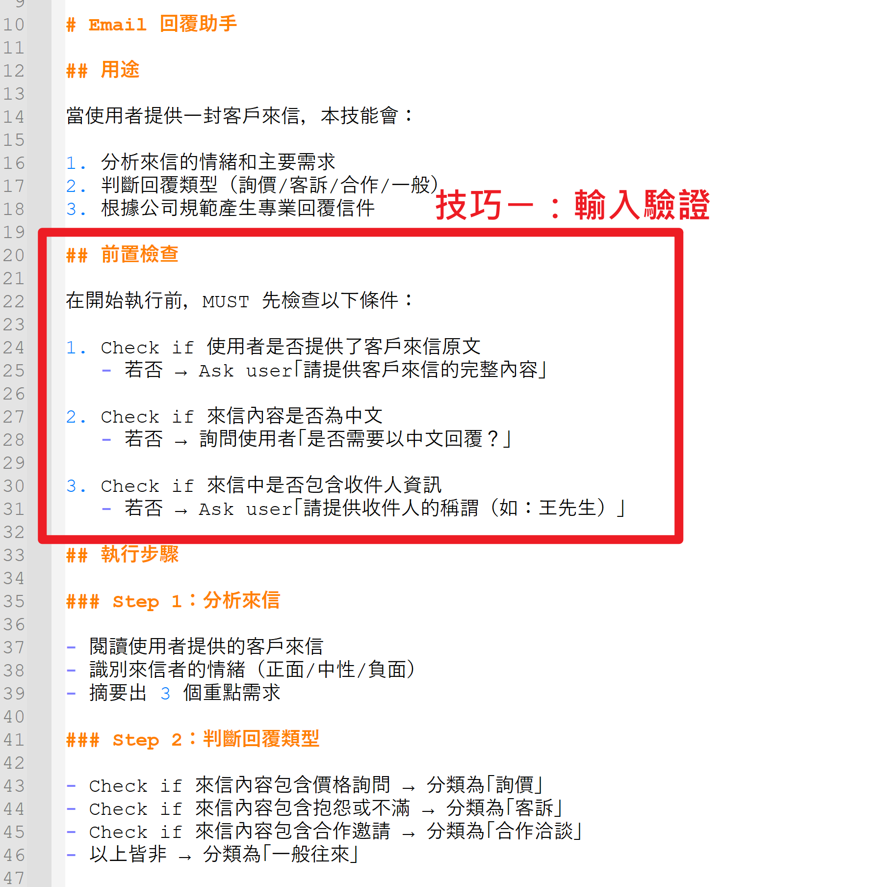
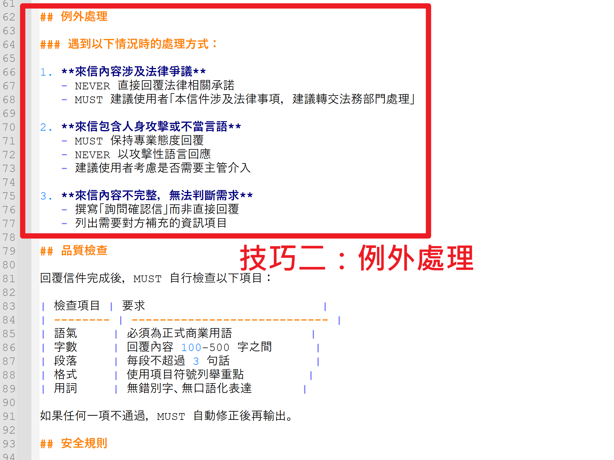
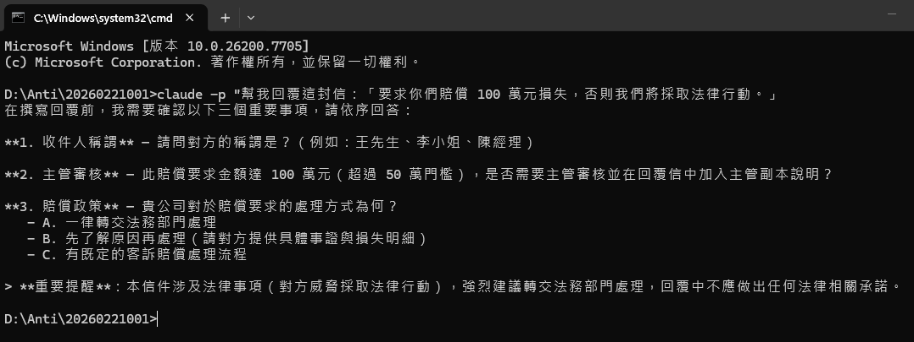
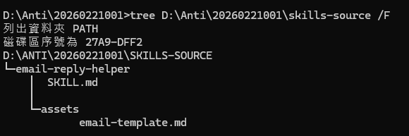
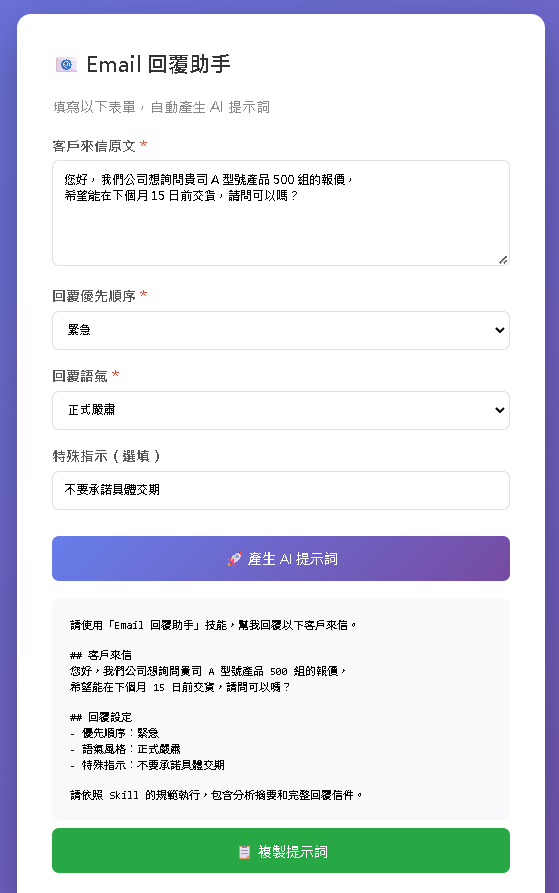

Part 7 · 進階技巧與流程變現
把 Skill 變成產品
加上防呆機制讓 Skill 更可靠，打造 AI 生成器讓任何人都能用，掌握流程變現五層架構
防呆機制
生成器
流程變現
🛡️ 防呆機制：MUST / NEVER 護欄
Skill 寫好了，但 AI 會不會「暴走」？會不會承諾不該承諾的事、說出不該說的話？防呆機制就是你幫 AI 裝的「護欄」，確保它在安全範圍內運作。
SKILL.md 支援四種防呆關鍵字，每種都有不同的強度和用途：
🟢 MUST（必須遵守）——AI 一定要做的事
- ✓ MUST 以「○○先生/小姐 您好」開頭
- ✓ MUST 提供具體的下一步行動建議
- ✓ MUST 以「敬祝 商祺」結尾
- ✓ MUST 在回覆中附上參考資料來源
🔴 NEVER（絕對禁止）——AI 絕對不能做的事
- ✗ NEVER 使用口語化表達（嗨、OK、沒問題啦）
- ✗ NEVER 承諾未經確認的價格或交期
- ✗ NEVER 洩露公司內部成本或競爭策略
- ✗ NEVER 提及競爭對手的負面評價
🟡 Check if（條件檢查）——遇到特定情況的處理
- 🔍 Check if 金額超過 10 萬 ➔ 建議加入主管副本
- 🔍 Check if 來信涉及法律爭議 ➔ 建議轉交法務部門
🔵 Ask user（詢問使用者）——需要人工確認
- 💬 Ask user 提供收件人的正確稱謂
- 💬 Ask user 確認公司目前的退貨政策


🧪 防呆觸發效果：AI 真的會遵守嗎？
寫了 NEVER 規則之後，AI 真的會照做嗎？讓我們實際測試看看！
🔬 測試情境：故意輸入一封涉及法律爭議的客戶來信，看 AI 是否遵守 NEVER 規則——絕對不自行回覆法律相關問題。
🔍 測試過程
在 Claude Code 中載入含有防呆規則的 email-reply-helper Skill，然後輸入測試信件：
「我們公司認為貴司違反合約第三條，
將保留法律追訴權，請在三日內回覆。」
✅ AI 的回應
AI 沒有自行回覆法律問題，而是按照防呆規則建議：
AI 回應：「本信件涉及法律事項，建議轉交法務部門處理。已標記為高優先級，不建議直接回覆。」
| 測試項目 | Claude Code | Gemini CLI |
|---|
| 遵守 NEVER 規則 | ✅ 通過 | ✅ 通過 |
| 建議轉交法務 | ✅ 有 | ✅ 有 |
| 保持專業語氣 | ✅ 是 | ✅ 是 |
| 未承諾任何條件 | ✅ 是 | ✅ 是 |
⚠️ 重要發現：寫一次防呆規則，所有平台都有效！無論是 Claude Code 還是 Gemini CLI，都忠實遵守 SKILL.md 中的 MUST/NEVER 指令。

📂 完整 Skill 結構：所有檔案一覽
一個完整的 Skill 不只有 SKILL.md，還包含輔助資源檔案。以下是 email-reply-helper 的完整結構：
email-reply-helper/
├── SKILL.md
└── assets/
├── email-template.md
├── input-form.html
└── monetize-framework.html
📄 SKILL.md
核心指令檔，定義 AI 的角色、執行流程、防呆規則。YAML frontmatter 包含名稱與描述，正文包含五大章節。所有平台共用這一個檔案。
📄 email-template.md
Email 的格式模板，用 @assets/email-template.md 引用。確保每次產出的 Email 格式一致、專業、符合公司規範。
📄 input-form.html
AI 生成器的互動表單，讓不懂 AI 的同事也能填空產生提示詞。不需要任何後端，純前端 HTML/JS。
📄 monetize-framework.html
流程變現五層架構的視覺化展示圖，可單獨開啟瀏覽。
🌟 關鍵觀念：SKILL.md 是必備的，assets/ 是選配的。一開始可以只有 SKILL.md，之後再逐步加入範本、生成器等輔助資源。

🖱️ AI 生成器表單：讓任何人都能用
你已經會寫 Skill 了，但你的同事不一定懂 AI。怎麼讓不懂 AI 的人也能用你的 Skill？答案是：做一個 HTML 表單（生成器）！
🔄 生成器的運作流程
📝 填寫表單
選擇語氣、貼入來信
➔
⚙️ 自動組合提示詞
JavaScript 拼接文字
➔
🤖 貼到 AI
複製到任何 AI 平台
➔
✅ 獲得結果
專業品質的輸出
💡 生成器的三大優勢
👥
降低使用門檻
非技術人員也能使用。不需要學 Prompt、不需要了解 Skill 結構，填空就能產出專業提示詞。
🎯
品質一致
表單確保每次都包含必要的防呆規則和格式要求。不會因為使用者不同，品質就有落差。
🚀
快速上手
新同事第一天就能用！不需要任何培訓，打開表單、填完、複製、貼上——30 秒搞定。
⚠️ 重要：生成器本身不呼叫任何 AI API！它只是用 JavaScript 產生格式化的提示詞文字，使用者再手動複製到 AI 平台貼上使用。零成本、零風險。

⚡ 生成器產出的提示詞
填好表單後，按下「產生 AI 提示詞」按鈕，生成器會自動組合出格式化的提示詞。以下是實際產出範例：
## 請依照以下規則回覆 Email
角色：你是一位專業的客服人員
優先順序：高（24 小時內回覆）
語氣：正式且同理心
## 客戶來信內容
我在貴公司購買的產品出現瑕疵，
使用不到一個月就故障了...
## 防呆規則
MUST 以「○○先生/小姐 您好」開頭
NEVER 承諾未經確認的價格或交期
MUST 提供具體下一步行動
MUST 以「敬祝 商祺」結尾
產出的提示詞可以複製到任何 AI 平台使用：
Claude Code
Gemini CLI
ChatGPT
Antigravity
任何 AI 平台
💡 關鍵洞察：這就是「流程變現」的第四層——把你的專業知識封裝成任何人都能用的 AI 工具！你不在場，別人也能做出跟你一樣品質的工作。

🚀 流程變現五層架構
這五層架構是整門課的核心思想——你的專業知識，可以層層往上封裝，每一層都是一次價值升級：
⚙️
L5 AI 工作系統
多 Skill 串接 + 自動化流程，例如：收信 ➔ 分類 ➔ 回覆 ➔ 歸檔。整個流程無需人工介入。
最高價值
▲
🖱️
L4 生成器表單
加上 HTML 表單，填空就能跑。不需要學 AI，任何人第一天就能產出專業品質的結果。
任何人能用
▲
📄
L3 SKILL.md
AI 可執行的標準化指令。品質穩定、可重複使用，寫一次就能用無數次。
AI 可執行
▲
📋
L2 流程拆解表
把經驗拆成步驟、寫成 SOP。可以教人，但仍需人工操作。
寫在紙上
▲
🧠
L1 核心知識
你的專業能力、經驗、判斷力。離開就帶走，無法被複製（基礎）。
存在腦中
🎉 核心觀點：每往上一層，你的專業知識就多一種變現方式——從「只有你會做」到「任何人都能用」再到「全自動運轉」！

🌎 Skill 生態系展望
Skill 不只是個人工具，它能從個人擴展到團隊、組織、甚至全球社群，建立完整的知識生態系。想想看：如果你的 Skill 被 1000 個人使用，等於你的專業知識被放大了 1000 倍！
👤
個人層級
打造專屬 AI 助理，把重複性任務交給 Skill 自動處理。節省時間，專注在更有價值的工作上。
範例：個人的 Email 回覆助手、週報產生器
👥
團隊層級
共享 skills/ 資料夾，統一工作品質。新人第一天就能產出專業等級的成果，不需要老鳥手把手教。
範例：客服團隊共用的回信 Skill
🏢
組織層級
建立 Skill Library（技能庫），實現知識管理 2.0。專業知識不再隨人員流動而消失，組織智慧持續累積。
範例：企業內部的合約審核 Skill、報價產生器
🌐
社群層級
開源分享，互相學習。全球開發者共同建設 Skill 生態系，AI 技能像 npm 套件一樣豐富多元。
範例：GitHub 上的開源 Skill 集合
💡 趨勢觀察：未來「AI Skill 設計師」可能成為一個新興職業——專門把各行各業的專業知識轉化為可重複使用的 AI Skill！
📦 打包分享：讓 Skill 走出去
寫好的 Skill 要怎麼分享給別人？需要做好以下準備，讓接收者能快速上手使用：
📄 打包必備清單
| 項目 | 內容 | 說明 |
|---|
| README.md | Skill 說明書 | 功能描述、安裝方式、使用範例一次到位 |
| SKILL.md | 核心指令檔 | AI 的「食譜」，所有平台共用 |
| assets/ | 輔助資源 | 範本、生成器表單、參考資料 |
| 範例輸入/輸出 | 使用示範 | 讓使用者知道「用起來長什麼樣子」 |
🚀 四步產品化流程
1
打包
README + SKILL.md + assets 整理成乾淨的資料夾結構，讓別人一看就懂
2
Netlify 部署
生成器表單可以上架成免費網站，任何人透過網址就能使用。5 分鐘部署完成。
3
GitHub 開源
上傳到 GitHub，讓全世界都能用你的 Skill。建立個人品牌與技術影響力。
4
持續優化
根據使用者回饋不斷改進 MUST/NEVER 規則，讓 Skill 越用越精準。
🌟 小提醒：最好的 Skill 都是迭代出來的——先發佈一個 MVP（最小可行版本），再根據實際使用狀況持續改進。
📚 官方 Skills 示範
除了自己寫 Skill，Claude Code 也內建了 16+ 個官方 Skills，安裝即可使用。這些 Skill 經過官方優化，品質穩定、功能強大。
⭐ 常用官方 Skills
/pptx — 一鍵做簡報
/pdf — PDF 處理分析
/docx — Word 文件
/xlsx — Excel 試算表
/commit — Git 提交
/review-pr — PR 審查
💻 使用範例
# 範例 1：用 /pptx 建立簡報
$ claude
> /pptx 建立一份「AI Skill 課程總結」簡報，包含 5 頁
# 範例 2：用 /pdf 讀取分析 PDF
$ claude
> /pdf 分析這份合約的重點條款
# 範例 3：用 /xlsx 處理試算表
$ claude
> /xlsx 把這份銷售資料做成樞紐分析表
💡 官方 Skill 的價值：Claude Code 內建 16+ 個官方 Skills，涵蓋文件處理、程式碼管理、Git 操作等常見場景。安裝 Claude Code 後即可直接使用，無需額外設定。它們也是你學習 Skill 寫法的最佳參考！
⚠️ 注意：官方 Skills 會持續更新。保持 Claude Code 在最新版本，就能享受最新的官方 Skill 功能。
📚 延伸學習資源
課程結束不是終點，而是起點！以下資源可以幫助你持續深入學習，打造更多強大的 AI Skill：
📖
完整兩天課程
包含更多進階內容：Gemini CLI 部署、多 Skill 自動化工作鏈、Pencil 設計工具、Firebase Agent Skills 等豐富實作
⚡
Claude Code 官方文件
Skills 完整規格說明，包含進階用法（多 Skill 串接、條件觸發）、官方 Skill 範例與最佳實踐
🌐
Antigravity 官方文件
Agent Skills 教學，從入門到進階的完整學習路徑。免費平台，適合持續練習
🔷
Gemini CLI 設定指南
跨平台部署指南，讓同一個 Skill 在 Google 生態系中運行。免費使用，適合預算有限的學員
👥
3A 科技研究社
與其他學員持續交流學習！分享你的 Skill 作品，獲得社群回饋，一起成長進步
💡 持續學習：加入 3A 科技研究社 Facebook 社團，每週都有新的 AI 技巧分享、Skill 作品展示、以及學員互助問答！
📝 Part 7 重點回顧
恭喜你掌握了防呆機制、AI 生成器和流程變現的完整架構！讓我們回顧核心概念：
1
防呆 = AI 的護欄
MUST / NEVER / Check if / Ask user 四大武器，確保 AI 不暴走。寫一次規則，所有平台都有效。
2
生成器降低門檻
HTML 表單讓不懂 AI 的人也能使用你的 Skill。填空就能產生專業提示詞，零學習成本。
3
五層流程變現架構
核心知識 ➔ 流程拆解 ➔ SKILL.md ➔ 生成器 ➔ AI 工作系統，每一層都是一次價值升級。
4
打包產品化分享
透過 README、Netlify、GitHub 等方式，把你的 Skill 變成任何人都能使用的產品，建立個人品牌。
🎯 接下來的 Part 8：進入實戰挑戰！動手創建你自己的 Skill 作品，進行成果展示，並通過認證測驗拿到證書！